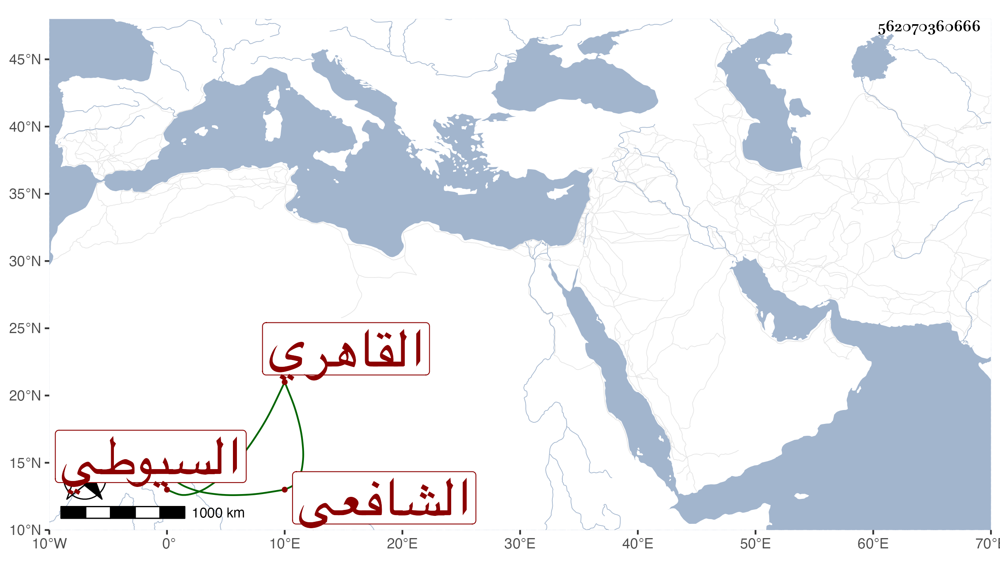

0902Sakhawi.DawLamic.ITO20230111-ara1.EIS1600.562070360666
Biography ID: 562070360666
204
محمد بن محمد بن حسن الشمس بن الشمس السيوطي ثم القاهري الشافعي الماضي أبوه . قال شيخنا إنبائه اشتغل بالفقه والحديث والعربية وتقدم ومهر في عدة فنون ورافقنا في السماع كثيرا . مات بعد أبيه يعني شابا في السنة التي مات فيها سنة ثمان أحسن الله عزاءنا فيه . وقال في معجمه : اشتغل كثيرا ومهر وسمع معنا من بعض الشيوخ وتعاني النظم والخط الحسن .
